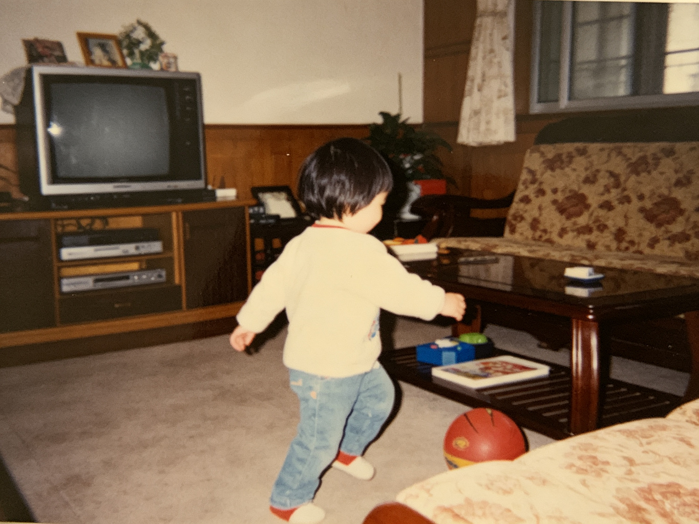
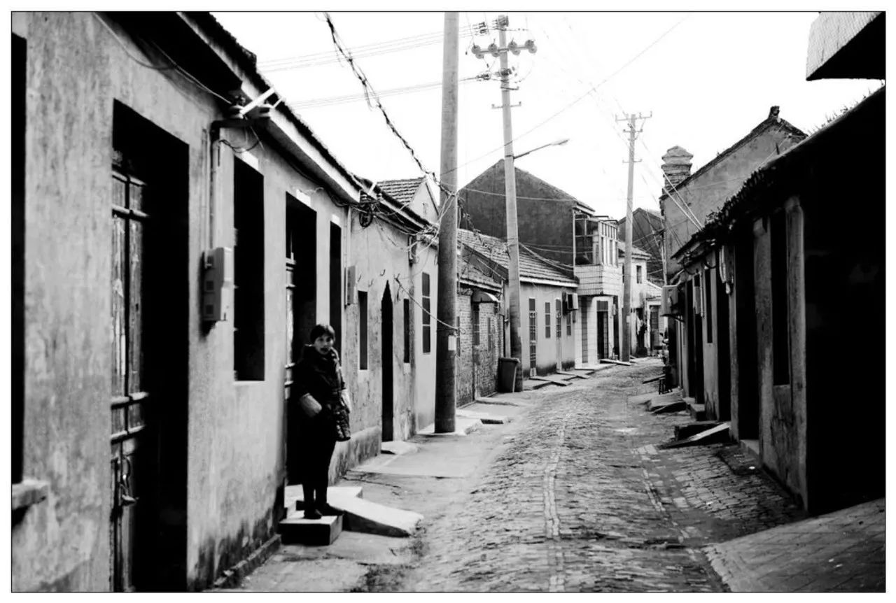
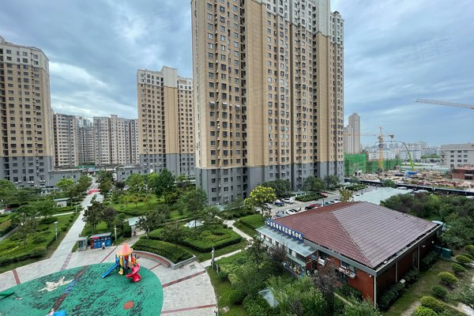
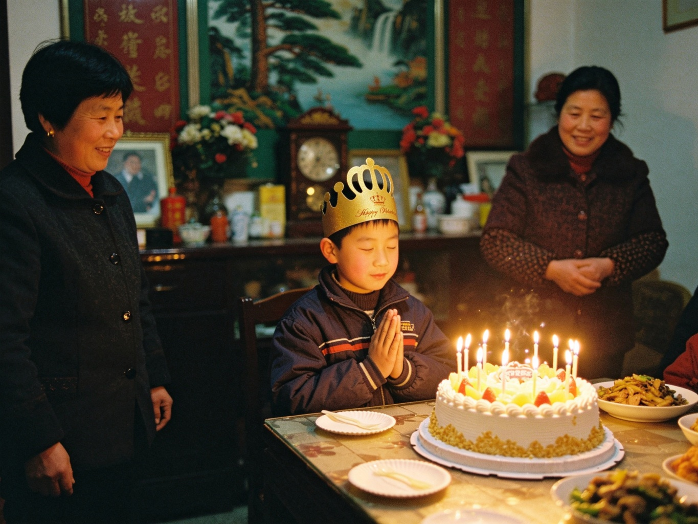

拾光客
2026-09-01 22:47
各位有缘人，我小时候的一段成长被人偷走了。我不记得自己是怎么长大的。 拜托你，帮我探寻一下我过去成长的秘密，谢谢。


评论 128 · 转发 34 · 赞 56
各位有缘人，我小时候的一段成长被人偷走了。我不记得自己是怎么长大的。 拜托你，帮我探寻一下我过去成长的秘密，谢谢。


老合德县城里，有一条桥南街。街尾有一家早就关了门的照相馆。传说只要你把“自己”留在那里——一张照片、一段录像、一件贴身的旧物——它就会替你继续“生长”。
桥南街是老县城最出名的老街——青砖铺地，宽不过三四米，横穿半个老县城，从小洋河上的朝阳桥一路往南。北边那条桥北街后来改叫发鸿街，再往东是朝阳街、兴南街。后来城市改造，拆的拆、改的改。如今你在任何地图软件上搜“合德老街”，还能看到它的位置，但当年的青砖巷子，早不在了。
今天路过桥南街，照相馆还是老样子，卷帘门关着。门口贴的证件照都褪色了。
楼下新开了家包子铺，豆浆不错。小时候住解放路那会儿，我妈说我总爱去街角那家买糖包。
又加班，城市的夜景其实挺好看的。但总觉得自己忘了点什么，怎么都想不起来。
整理老屋，门框上全是小时候量的身高线。我拿笔又划了一道。后来再看，好像多了一道。
翻老照片，有一张影子的方向不太对。可能是那天太阳的角度奇怪吧。
阳台那盆绿萝，上周才从花市买回来。今早看，又长出了几片新叶，生命力真顽强。
2026-08-28 · 阅读 3,102
2026-07-12 · 阅读 987
2025-11-03 · 阅读 640
各位有缘人，我小时候的一段成长被人偷走了。我不记得自己是怎么长大的。拜托你，帮我探寻一下我过去成长的秘密，谢谢。
今天路过桥南街，照相馆还是老样子，卷帘门关着。门口贴的证件照都褪色了。
楼下新开了家包子铺，豆浆不错。小时候住解放路那会儿，我妈说我总爱去街角那家买糖包。
又加班，城市的夜景其实挺好看的。但总觉得自己忘了点什么，怎么都想不起来。
翻出一张老照片，背景是桥南街。那会儿街还宽着，青砖还亮着。现在拆得只剩记忆了。
有谁记得 2009 年那会儿的事吗？我总觉得那年夏天少了点什么。
整理老屋，门框上全是小时候量的身高线。我拿笔又划了一道。后来再看，好像多了一道。
翻老照片，有一张影子的方向不太对。可能是那天太阳的角度奇怪吧。
阳台那盆绿萝，上周才从花市买回来。今早看，又长出了几片新叶，生命力真顽强。
（本条说说内容已移除）

晚风：你说的录像带我也有，要不要对一下？09-01
陌上花开：空间好冷清，回踩一个。08-28
归途：兄弟，那个传说我也听过，别当真。08-24
月下独酌：你更新的频率越来越低了，还好吗？08-18
尊敬的注册用户：
因业务调整，“成长档案”已停止运营。您的历史记录已封存归档，无法在线查看。
如果您是当年的注册家长或本人，请使用注册信息登录，尝试恢复您的成长档案。
| 年份 | 身高(cm) | 体重(kg) | 备注 |
|---|---|---|---|
| 1998 | 96 | 15.0 | 周岁体检 |
| 2003 | 128 | 26.5 | 入学 |
| 2009 | 165 | 48.0 | 十四岁 |
| 2015 | 178 | 64.0 | 成年 |
| 2026-09-03 | 184.5 | 71.2 | 仍在更新 |
注：该档案最近一次写入于 2026-09-03。按常理，成年后身高体重应趋于稳定——但这条记录显示，数据仍在更新。原因待查。
2008.06 立项 · 儿童成长数据记录平台（身高、体重、照片、日记）
2010.03 上线“自动补全”功能：系统根据既有记录，自动补全缺失的成长条目
2012.11 用户数据异常增长，部分条目无法验证来源
2014.02 存储量异常，已无法判断部分记录是否来自真实用户
2015.06.30 停止服务 · 数据封存（封存前最后一次写入：一条“成年后仍在更新”的记录）
本页为搜索引擎保留的历史快照。若需查看完整成长档案，请使用注册信息登录；无法登录者，可尝试“找回童年”。
← 返回 QQ 空间| 年份 | 身高(cm) | 体重(kg) | 备注 |
|---|---|---|---|
| 1998 | 96 | 15.0 | 周岁体检 |
| 1998 年 3 月 14 日，射阳县人民医院儿保科。家长签字：王秀兰。 | |||
| 2000 | 110 | 18.0 | 入园体检 |
| 2000 年 9 月，合德镇中心幼儿园。 → 追查原始归档：合德镇中心幼儿园 2000 年入园体检表（儿保离线归档，也许能查到是谁在改我的记录） | |||
| 2003 | 128 | 26.5 | 入学 |
| 2003 年 9 月 1 日，合德小学一年级。 | |||
| 2006 | 148 | 38.0 | 五年级 |
| 2006 年 6 月，期末体检。 | |||
| 2009 | 165 | 48.0 | 十四岁 |
| 2009 年 3 月 14 日，十四岁生日当天测量。 | |||
| 2012 | 175 | 58.0 | 初中毕业 |
| 2012 年 6 月，初中毕业体检。（该条记录最后修改于 2026-09-03 02:13，修改者：0126） | |||
| 2015 | 178 | 64.0 | 成年 |
| 2015 年 6 月，成年体检。（该条记录最后修改于 2026-09-03 02:13，修改者：0126） | |||
| 2020 | 180 | 67.0 | 自动补全 |
| 自动补全记录，无人工录入来源。 | |||
| 2023 | 182 | 69.5 | 自动补全 |
| 自动补全记录，无人工录入来源。 | |||
| 2026-09-03 | 184.5 | 71.2 | 仍在更新 |
| 写入时间 2026-09-03 02:13 · 来源：自动补全 · 操作账号 0126 · 状态：仍在更新 | |||

您要查看的页当前不可用。网站可能遇到技术问题，或者您需要调整浏览器设置。
HTTP 410 Gone · 请求的资源已被永久移除
| 姓名 | （墨迹涂黑，仅余编号 czda_0127） | 性别 / 出生 | 男 / 1995-03-14 |
|---|---|---|---|
| 入园单位 | 合德镇中心幼儿园 · 小（2）班 | 体检日期 | 2000-09-04 |
| 身高 / 体重 | 109.5 cm / 17.8 kg | 头围 / 胸围 | 50.2 cm / 53.0 cm |
| 乳牙 / 视力 | 20 颗 / 左5.0 右5.0 | 血红蛋白 | 128 g/L |
| 预防接种 | 齐全（卡痕可见） | 生长发育评价 | 中上 · 营养良好 |
| 检查医师 | 陈桂英 | 家长签字 | 王秀兰 |
| 测量日期 | 身高(cm) | 体重(kg) | 阶段 / 来源 | 操作账号 |
|---|---|---|---|---|
| 2003-09 | 128.0 | 26.5 | 入学体检 · 合德小学 | 原始 |
| 纸质随访，医师陈桂英，原件可查。与成长档案一致。 | ||||
| 2009-03-14 | 165.0 | 48.0 | 14岁 · 转档前最后一次纸质随访 | 原始 |
| 本次记录后，纸质随访终止。该行元数据显示于 2026-09-03 02:13 被 0126 重写过一次。 | ||||
| 2015-06 | 178.0 | 64.0 | 成年 · 骨骺已闭合 | 0126 |
| 医学上骨骺闭合后身高不再增长。本行由 0126 在主站关停当夜补录。 | ||||
| 2018-07 | 179.2 | 66.1 | 自动补录 · 无纸质来源 | 0126 |
| 成年后第 3 年，身高 +1.2cm。无测量单位、无医师。 | ||||
| 2024-05 | 183.0 | 70.0 | 自动补录 · 无纸质来源 | 0126 |
| 成年后第 9 年，仍在增长。 | ||||
| 2026-09-03 02:13 | 184.5 | 71.2 | 生长状态：未停止 · 测量在继续 | 0126 |
| 写入时间与你进入当天同步。一个 31 岁、骨骺闭合 11 年的人，身高仍在以约 0.2cm/年的速度被“测量”出来。测量从未停止。 | ||||
本报讯 6月30日凌晨，我县一名 22 岁青年在家中离奇昏迷，被家人发现后紧急送往县人民医院抢救，至今未醒。
据了解，昏迷青年名叫林远，22 岁。据其家人反映，林远近期经常熬夜，6月29日晚更是在电脑前坐了一整夜。30日凌晨家人发现时，他已失去意识，电脑屏幕仍亮着，显示一个名为"成长档案"的网站。
医院检查显示，林远各项生命体征平稳，但脑部活动异常，无法唤醒。主治医生表示，这种情况较为罕见，不排除心理因素或外部刺激导致。
林远的同学反映，他近期性格变得孤僻，经常说一些"有人在网上做坏事""我要去阻止"之类的话。校方表示，林远在校期间表现正常，成绩中等，无违纪记录。
消息传开后，射阳论坛上出现了讨论帖（帖子编号 8847），也有人找到了林远的QQ空间。
截至发稿，林远仍在县人民医院ICU重症监护室观察，昏迷原因待查。
该日记已加密。请输入林远的出生月份和日期（4位数字，如：0314）作为密码。
提示：密码是林远昏迷前一天的日期（MMDD）——新闻与空间日志里都有线索。
| 姓名 | 林远 | 性别 | 男 |
| 出生日期 | 1993-??-?? | 入院时间 | 2015-06-30 02:40（急诊） |
| 入院科室 | ICU 重症监护 | 床位 | 3 楼 __ 床 |
| 入院诊断 | 意识障碍待查 → 植物状态 | ||
| 住院天数 | 4,0xx 天 · 持续植物状态 · 无苏醒记录 | ||
| 联系人 | 王秀兰（母亲）· 探视记录：2015-07 起长期缺席 | ||
02:13，家属发现患者在家中电脑前昏迷，电脑屏幕停留在「成长档案」网站。02:40 由 120 送入我院，查体无外伤，生命体征平稳，瞳孔对光反射迟钝，对外界刺激无反应。
03:00 脑部 CT 未见器质性损伤。03:31 转入 ICU 监护。
02:40 入院，开通静脉通道，心电监护。
02:47–03:34 首次脑电监测：出现持续 47 分钟的高频异常放电，波形呈周期性分叉，无法归类于任何已知癫痫类型。此后未再出现。
03:31 转入 ICU 重症监护，启动植物状态管理流程。
同日 02:13，县内「成长档案」网站服务器关停。
2026 年已记录 41 次「02:13 脑电异常」，每次持续约 47 分钟，全部发生在凌晨 02:13–03:00，无一例外。
2026-01-03 02:13 异常放电 · 47 分钟
2026-02-11 02:13 异常放电 · 47 分钟
2026-03-07 02:13 异常放电 · 47 分钟
……（共 41 次，时间高度规律）
患者持续植物状态，脑干反射存在，无意识活动，未见任何「患者清醒」或「可自主活动」记录。家属诉其近期精神紧张、长期熬夜，诱因待查。
林远 2015-06-30 02:13 昏迷、02:40 入院，之后再未醒来。
但你查到的成长档案安全日志显示：账号 0126 在 2015-06-30 之后，仍然每天 02:13 登录、停留 47 分钟、继续写入。
一个躺在 ICU 从未清醒的人——不可能操作任何账号。
所以，每天 02:13 用 0126 动手的，不是林远。
林远是被困在这张病床上的第 126 个。你查到的「篡改」，是别的东西在用他的账号。
归档备注：联系人「王秀兰」与历年儿保档案家长签字一致（1998、2000 年入园体检，签字：王秀兰）。——从出生起，他的档案就在这套系统里。
「我查到了它的命门。它需要联网才能扩张——它在射阳本地有一个物理节点，一台本地化服务器，所有写入都从这里出去。只要切断这个节点的互联网连接，它就会离线、停止生长。它补不好这个空，因为它得靠这台机器活着。」
「我会在它备份的间隙动手。你那边——切断它。」
本地节点已离线。藤蔓的「根」断了一截，页面开始变干净。
[system] 02:13 微写入 x1 · 来源：SY-IDC-01 （点击核查）
林远的声音从很远处传来，比之前更轻：
「……如果它真的死了，也别急着信。它会装死——哪怕你看着它被清除，也别全信。……还有，任何通道里，都别说出我具体在哪。等我确定安全了，我自己告诉你。」
本作品为虚构心理恐怖解谜游戏，包含：
建议 16 岁以上游玩；对心理恐怖不适者，请直接关闭。
所有人物、机构、事件均为虚构。您的输入仅保存在本地浏览器，不上传。
空心菜：？？？哥你在说什么啊，桥南街不是早拆了吗，哪来的什么传说
小桥流水：我好像也听说过那个传说……你别吓我
键盘侠9527：编故事骗点击量吧，举报了
晚风：你收到包裹了吗？我也收到过一个，里面是录像带
桥北桥南：我外婆住发鸿街，她说那家馆子解放前就有，专给人拍“纪念照”
陈年旧事：我爸年轻时在那家馆子打过下手，库房里堆着好多没人认领的相片，都发霉了也没人来取
小城故事多：你说的那个网站我2012年真上过，好像就叫成长档案，填了生日就让你传照片
白发渔樵：我年轻时在射阳插过队，那时就听老辈讲，照相馆里存的相片会自己“长”，隔年去取，人就变样了——这说法少说传了四十多年了
_低语_：……